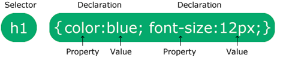
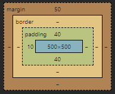

Cascading Style Sheets, of terwijl 'CSS' Hiervoor gebruiken wij om onze website te ’stylen’. CSS je HTML
code
en soort vorm kan geven, i.p.v. dat al je code onderaan gestapeld is, je kan dan leuke kleurtjes aan je
fonts
geven, of achtergronden plaatsen op een pagina.
Hoe pas je het toe?
Je kan CSS op drie manieren toepassen, de meest gebruikte manier is uiteraard dat je een nieuwe file
‘style.css’ noemt en dan boven je body, in de head een link tag gebruikt waar je als ‘href’ dezelfde
‘style.css’
in zet:
<link rel="stylesheet" href="style.css">
De tweede manier is om in je tag ‘style = “__:__;”’ te zetten:
<p style="color: blue;">Lorem</p>
De derde manier is door style in de body te zetten:
<style>
p {
color: red;
}
</style>
Syntax
In CSS gebruik je heel andere code dan in HTML.

Je begint je code met een selector.
Die refereert naar een element in je HTML.
De haakjes heten semicolon brackets. Daarmee kan je de code voor het stijlen inzetten.
Die code bestaat uit properties en values.
Properties is hetgene dat je de code wilt laat doen zoals de kleur of lettertype veranderen.
Value is de keuze voor wat de property laat zien zoals welke kleur je het wilt worden.
Selectors
Dit zijn de codes die je gebruikt in CSS zelf, hiervoor gebruik je niet dezelfde codes die je gebruik in
HTML. Je hebt allerlei verschillende selectors in CSS.
Eenvoudige selectors (selecteer elementen op basis van naam, id, klasse)
Combinator-selectors (selecteer elementen op basis van een specifieke relatie daartussen)
Pseudo-klasse selectors (selecteer elementen op basis van een bepaalde status)
Pseudo-elementenkiezers (selecteer en stijl een deel van een element)
Attribuutkiezers (selecteer elementen op basis van een attribuut of attribuutwaarde)
In HTML maak je classes aan in een element, maar hoe geef je dat in css?
Simple, met css voeg je een '.' ervoor.
Comments
Een CSS comment kan je gebruiken met de shortcut ‘ctrl + /,’ er komt dan automatisch in je CSS ‘/* */’ te
staan. Uiteraard schrijf je er tussen wat je wilt uitleggen/organiseren. CSS comments zijn er om uit te
leggen wat je doet, of te organiseren zodat het duidelijker is. Comments maken het ook makkelijker om dingen
te debuggen.
Met styling kan je zowel de kleuren als die van de achtergrond aanpassen.
Voor de letters is het "Colors" en voor de achtergrond "background-color".
Je kan ze gebruiken voor al je headings, sections, paragraphs en divs.
De kleuren kan je met zowel woorden als kleurcodes aangeven.
Dus "color: black" of "color: #0000".
Variaties zijn daarin ook mogelijk zoals
“background-color:rgba(255, 99, 71, 0.5)”
Fonts
Teksten aanpassen kan je natuurlijk ook doen, hier aan geef je aan welk element in je HTML wilt gebruiken,
voor paragrafen gebruik je de 'p' element, en voor titles de ‘h1’ element, of ‘h2’ en etc.
Je hebt allemaal verschillende soorten css properties waarbij je je gekozen element van HTML wilt aanpassen.
Hierbij zou ik wel willen zeggen dat je vrij bent om door te puzzelen totdat de element is aangepast op jouw
eigen manier hoe je dat wilt!
Borders
Er zijn meerdere borders die je kan gebruiken als een omtrek bij bijvoorbeeld een paragraaf in je tekst. In
CSS, zet je de class of de tag waar je een border omheen wilt, dan schrijf je tussen de {}, ‘border-style:
__;’ je kan kiezen uit:
solid
double
groove
ridge
inset
outset
dotted
dashed
mixed
hidden
none
Units
Units zijn waardes waar je in je code specificaties mee kunt aangeven.
Zoals lengte en breedte.
Voorbeeld:
h1 {
font-size: 60px;
}
Achtergronden
In je body, div, h1, h5, p, wat dan ook, kan je 'background-color' zetten met daar achter een kleur met RGB,
sRGB of iets anders.
Maar het hoeft niet per se een kleur te zijn, misschien wilt u wel een foto als acthergrond, dan gebruik je
'background-image' met daar achter een url naar de foto. Het is handig als je die foto hebt opgeslagen zodat
je die niet kwijt raakt.
De foto is soms wel eens te klein... een oplossing hiervoor is om 'background-repeat: no-repeat;' te gebruiken
en dan je foto resizen.
Als het doel is om de foto juist een repeat te laten hebben, dan verander je het naar iets anders, of laat je
het zo.
Margin & Padding
Met margin kun je de ruimte om elementen heen bepalen.
Met padding kun je de ruimte in elementen bepalen.
Met Ctrl + Shift + C kan je inspect (of rechtermuisknop -> inspect) openen, ergens onderaan zie je dan:

Boven zie je margin en padding in ‘inspect,’ onder zie je een screenshot van de (simpele) toegepaste
versie. De kleuren zijn soortgelijk waardoor het makkelijk te zien is wat wat is.
In CSS wordt de term "boxmodel" gebruikt als het over ontwerp en lay-out gaat.
Het CSS-boxmodel is in wezen een box die om elk HTML-element heen loopt. Het bestaat uit: conent, padding,
borders en margins. De onderstaande afbeelding illustreert het doosmodel:
Content - De inhoud van de doos, waar tekst en afbeeldingen verschijnen
Padding - Maakt een gebied rond de inhoud leeg. De vulling is transparant
Border - Een rand die rond de opvulling en inhoud loopt
Margin - Maakt een gebied buiten de grens leeg. De marge is transparant
Height & Width
Met Height & Width kun je de grootte en breedte aanpassen van elementen.
Je kunt er alleen niet de padding, borders, en margins mee aanpassen.
Voorbeeld:
div {
height: 50px;
width: 100%;
}
Links
Er zijn vele manieren om links toe te passen in CSS, je hebt bijv. een tekst waar je op kunt klikken die je
dan automatisch naar een andere page stuurt. Of misschien wel een button (met of zonder tekst) die je naar
een andere page stuurt.
Links kun je op verschillende manieren stylen, hier een paar voorbeelden:
Hover is een veel voorkomend iets met het stylen van bijv. buttons. Het houd in dat als je met je muis over
een stuk tekst of een link of een button gaat dat de style van die button veranderd. De code hierboven ziet
er dan alsvolgt uit in CSS:
Een achtergrondkleur instellen voor je list en de items.
Met de list-style-type kun je de marker veranderen van je list.
Opties hiervoor zijn circle, square, upper-roman en lower-alpha.
ul {
list-style-type: circle;
}
Met list-style-type:none kun je ze ook verwijderen.
Door “margin:0" en "padding:" toe te voegen kun je ook de margins en paddings erbij verwijderen.
Met de list-style-image kun je een afbeelding gebruiken als marker.
Voorbeeld:
ul {
list-style-image: url('sqpuprle.gif');
}
Met de list-style-position kan je die positie van de markers bepalen.
Met "Inside” en “Outside” geef je de positie aan.
Voorbeeld:
ul {
list-style-position: outside;
}
ul {
list-style-position: inside;
}
Tables
Als je hier bent gekomen, weet je waarschijnlijk al wat tables zijn en wil je ze nu gaan stylen.
Zonder CSS, zien jouw tables er lelijk en verwarrend uit, dus is het gebruiken van CSS bijna verplicht.
Dit kan je met borders oplossen. Gebruik de 'border' property bij je table, th en td, je krijgt dan bij je
table, th en td elementen een eigen border.
Dit ziet er niet zo mooi uit omdat elke border hun eigen sectie heeft. Zet dan bij table de property
'border-collapse: collapse;' het word dan allemaal 1 lijn, i.p.v. 2 lijnen.
Display
Display geeft aan of een element een block of inline box is en de layout voor de children, zoals flow
layout, grid of flex.
Voor display gebruiken wij 'flex' nu het meest.
Position
Met de position code kun je ervoor kiezen hoe je elementen reageren op het scrollen van de pagina waarop ze
staan.
De opties hierin zijn als volgt:
static
De standard positive. Hiermee zal alleen wel de top, right, bottom, left, en z-index codes geen invloed
meer hebben.
relative
De element gaat mee met de normale flow van de pagina.
Het relativeer zichzelf aan de top, right, bottom, en left codes.
absolute
Je element zit niet meer in de flow van de pagina en zijn plek wordt ook opgegeven.
Hij wordt gepositioneerd bij zijn dichtstbijzijnde buur-element of de rand van de div waar het zich in
bevindt behalve als er top, right, bottom, en left codes aanwezig zijn. Dan volgt het die.
fixed
Net als fixed zit je element niet meer in de flow van de pagina en wordt zijn plek opgegeven.
In plaats daarvoor wordt hij gepositioneerd in de viewport van het scherm.
Alleen als er als er top, right, bottom, en left codes aanwezig zijn zal hij die volgen.
sticky
De element staat op de normale flow van de pagina.
Hij wordt gepositioneerd bij zijn dichtstbijzijnde buur-element inclusief tables of de rand van de div
waar het zich in bevindt gebaseerd op top, right, bottom, en left codes.
Deze positie heeft geen invloed op de rest van de aanwezige elementen.
Flexbox
Flexbox is de term die word gebruikt om alles gemakkelijk te positioneren, om dit te gebruiken zet je
'display: flex;' in jouw container kan je dan een directie aan de 'children' geven.
Je kan media queries gebruiken om je website responsive te maken, dat houd in dat je de grootte van jouw
website kan aanpassen en dat het er nog steeds goed uit ziet. Dit is voornamelijk gebruikelijk als je een
website wilt voor beide je telefoon en laptop.
@media screen and (max-width: 767px) {
/* CSS CODE HERE */
}